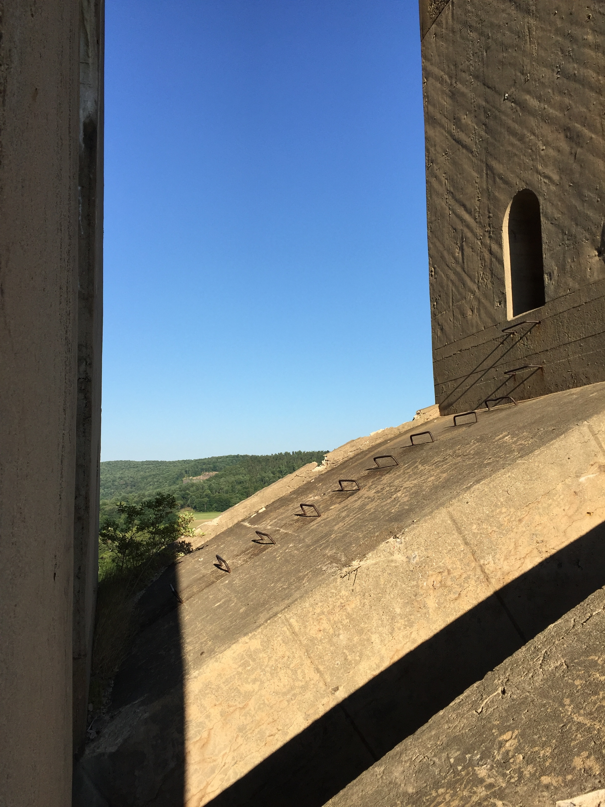
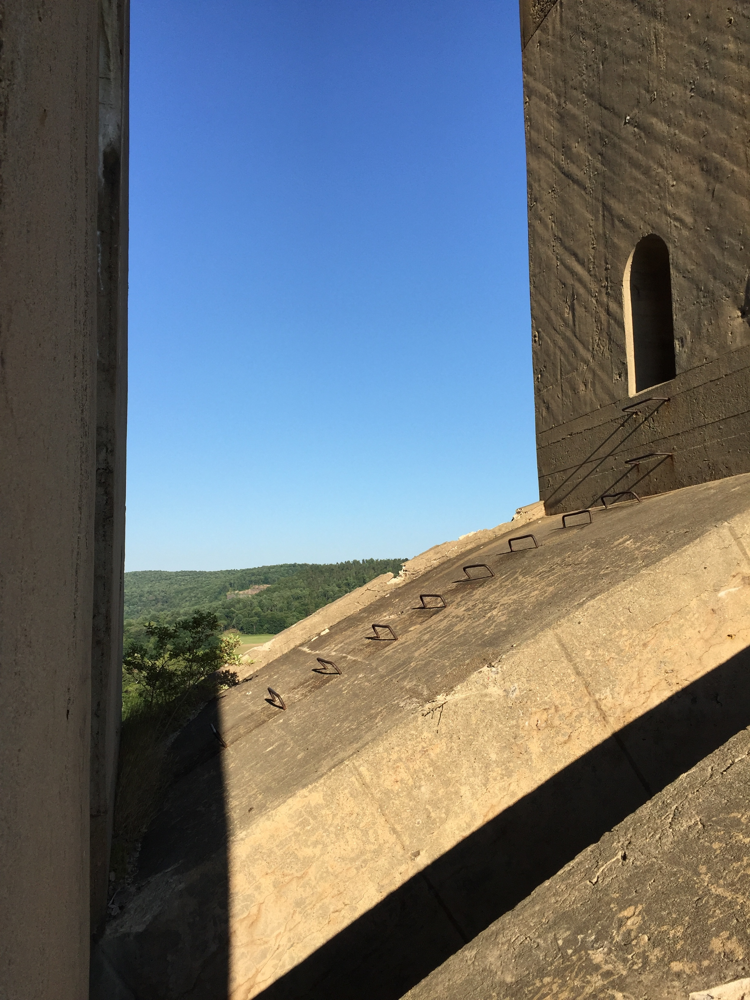

Film Ideas
Location - Tunkhannock (Railroad) Viaduct


 

Idea
Since I'm shooting 16mm film in 2016 if possible I'd like to confront the medium in some way.
- Go back to the location and film local interviews as if the bridge had just finished completion. Although the idea could be seen as a simple time travel prank. I just think transposing two time periods on top of eachother is appropriate.
- Make a documentary about the ghost of Abraham Burton Cohen coming back to haunt the site of the Harrison Avenue Bridge. There's something about ghosts and film that feels right, but haven't fully formed the idea yet.
- Stories about kids playing on the arches? It's such a great space. Wonder if ABC had intentions beyond being used for maintenence. Everyone I know has a story about it. Could be very linear, a story per arch. Could also be really boring too.
Old Ideas that I may return to
- Filming cars and hearing the private conversations inside of them.
- A compilation of title sequences to imaginary films.